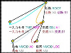

TrEd Extension: conll2009 (version 1.18)
CoNLL 2009 Shared Task
(generated documentation)
Description:
This package contains a stylesheet for visualization of
CoNLL-2009-ST data in TrEd and
scripts (for Linux and similar systems) for converting from the CoNLL-2009-ST format to PML.
TrEd macro files:
Stylesheet files:
- /export/home/pajas/projects/tred-extensions/conll2009/stylesheets/conll2009
Resource files:
Script files:
- args.btred
- conll2pml
- conll2009-to-pml.sh
- pml2conll